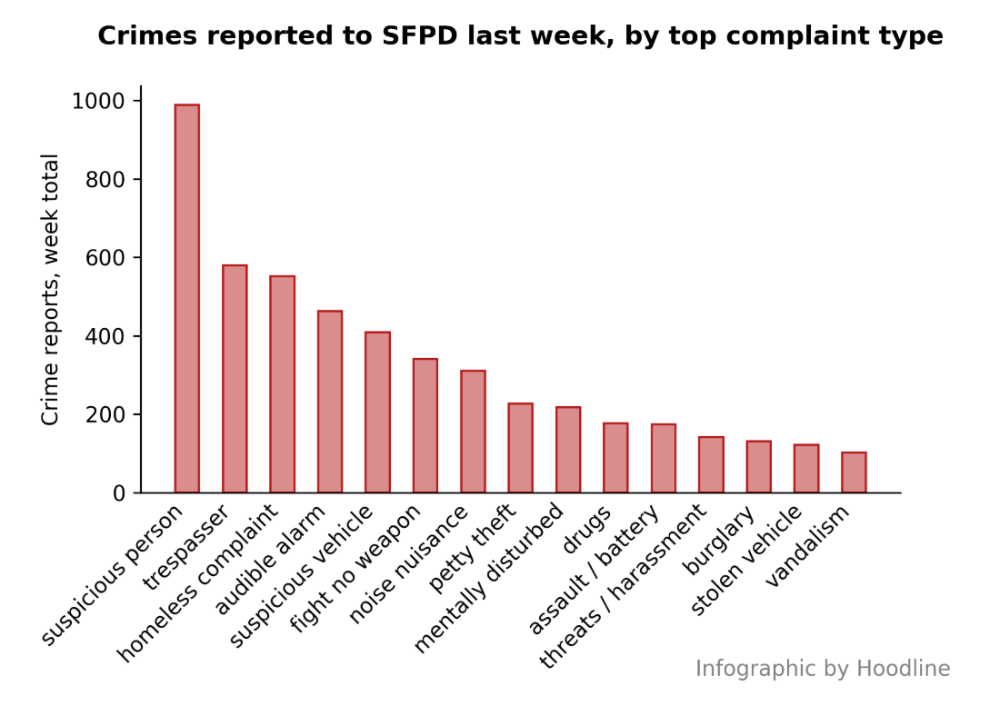
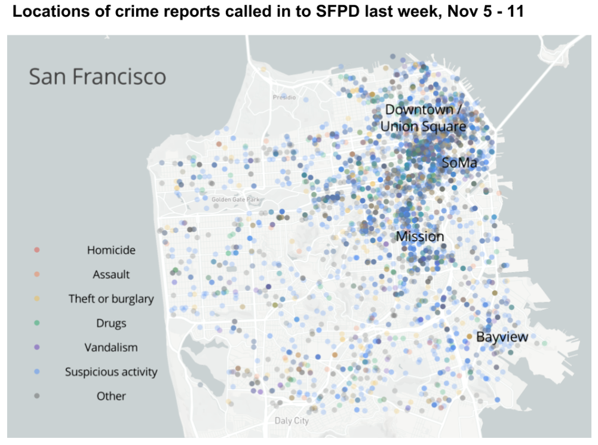

Alternative Approach to Automated Visualizations
Recreating visualizations from this hoodline.com news article
Thought Process:
As someone who appreciates the rapidly-expanding accessibility to all sorts of data about human behavior, the prospect of extending this access to the wider public greatly appeals to me.
A plethora of powerful open-source tools now allow us to efficiently mass produce dynamic and aesthetically-appealing data visualizations. So when I came across Hoodline's job description and viewed
examples of news stories produced through their automation-centered approach, I was eager to share some thoughts on how to potentially present the data more effectively.
I'll cover two visualizations from the article linked above, presenting the original, then my recreated version, followed by some notes on the changes I made. All the code related to this project can be found on Github.
(1) Hoodline Article Bar Chart:
Alternative Bar Chart:
Note: this is crime data from Crimeometer's API. I'm not sure what the source of the original chart data is.

*The code for creating this chart is easily automatable and can be found in this project's github repository.
Suggested Edits:
1. First, I'm assuming the original chart was created with matplotlib and the rationale for doing so was at least partly due to ease of automation. Currently, many other visualization libraries
offer greater control over design elements while also being simple enough to automate. One such example is Altair, which is a pythonic grammar for the Vega-lite library. I used Altair in producing this recreation.
2. In terms of chart design, since the reader is expected to read crime category labels, a horizontal bar chart is probably a better choice; it facilitates easier reading while maintaining the same effective visual representation of crime counts.
3. Reducing the total number of crimes included might be worth considering to avoid information overload (I reduced the number from 15 to 12, but even a few more could be removed).
4. Capitalizing labels would improve readability and generally looks more professional.
5. A visual guide is needed to link bar sizes to raw crime counts. In a vertical bar chart this could be horizontal lines. Another option is to embed the actual counts at the end of each bar (as in the recreated chart).
6. Using color to highlight the top crime category is an effective means of emphasizing the most important data point.
7. Finally, aligning the chart title to the left side seems to be the conventional style in news visualizations.
(2) Hoodline Article Map:
Alternative Map:
Initial Thoughts:
Putting myself in the reader's shoes, a map of crime data should clearly communicate both macro and micro level insight, addressing the following questions:
- Where is crime occurring?
- How prevalent is it (overall and by specific type)?
The original map does a decent job addressing the macro, using color to display crime variety and point clustering to indicate crime hotspots.
I would suggest also allowing the reader to zoom in and explore micro level detail, which is probably more personal and meaningful (e.g. what crimes are occurring in my neighborhood?).
The overlapping of thousands of points in the original map makes this difficult to answer clearly, though it might be appropriate in the following scenarios:
- Only one category of crime was being plotted
- The number of points was much smaller (e.g. < 50)
- A clear geographical pattern was present (i.e. colors were segregated in different areas)
Suggested Edits:
1. Instead of plotting all points, I would suggest aggregating the data in each subsection of the city through binning.
This is a more precise method of displaying crime concentration, since individual points can potentially become hidden if they overlap.
It also avoids the issue of data misrepresentation when partially-opaque points overlap (e.g. overlapping blue and yellow dots appear as one green dot).
2. One way to clearly present crime data on the micro level is to provide mini summaries of crime stats in each hexagonal subsection.
I implemented this through a pop up window in my recreation.
This is in contrast to the original map, which provides readers with a color key and essentially tasks them with visually processing several thousand points to derive useful insight.
I suspect most would observe the predominance of blue dots (indicating suspicious activity) and not bother to delve deeper.
Binning the data and providing pop up stats is a much more effective means of communicating micro stats to the reader (what crimes are occurring in what amounts in each part of the city).
3. Identifying landmarks through labels is useful for helping readers locate themselves on the map, but displaying black text over a dark blue background makes the labels a little difficult to read.
One solution is to utilize an interactive map that layers elements and avoids overlap, which is standard in Mapbox. Labels are added or removed depending on the map zoom level.
As you can see in my recreation, particular streets and landmarks are presented as appropriate without overcrowding the map (this can be tinkered with further to include the desired level of detail).
*It seems straightforward to me that an interactive map engages the reader more, allowing them to zoom in and explore the micro view of crime in their city, and provides a much richer overall experience.